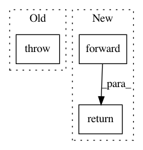

50f9caba54a250607938b91b6564a76d0157a53f,tensorflow_encrypted/convert/register.py,,maxpool,#Any#Any#Any#,172
Before Change
def maxpool(converter: Converter, node: Any, inputs: List[str]) -> Any:
raise NotImplementedError()
input = converter.outputs[inputs[0]]
return tf.nn.max_pool(input, list(node.attr["ksize"].list.i),
After Change
max = MaxPooling2D(shape, pool_size, strides, padding, channels_first)
out = max.forward(input)
return out
def shape(converter: Converter, node: Any, inputs: List[str]) -> Any:
input = converter.outputs[inputs[0]]
In pattern: SUPERPATTERN
Frequency: 4
Non-data size: 3
Instances
Project Name: mortendahl/tf-encrypted
Commit Name: 50f9caba54a250607938b91b6564a76d0157a53f
Time: 2018-10-16
Author: yann.dupis@gmail.com
File Name: tensorflow_encrypted/convert/register.py
Class Name:
Method Name: maxpool
Project Name: IBM/adversarial-robustness-toolbox
Commit Name: 3b3bc4a3f3098350b5da0881d491617ad2036c41
Time: 2020-11-20
Author: david.slater@twosixlabs.com
File Name: art/defences/preprocessor/preprocessor.py
Class Name: PreprocessorTensorFlowV2
Method Name: estimate_forward
Project Name: IBM/adversarial-robustness-toolbox
Commit Name: 3b3bc4a3f3098350b5da0881d491617ad2036c41
Time: 2020-11-20
Author: david.slater@twosixlabs.com
File Name: art/defences/preprocessor/preprocessor.py
Class Name: PreprocessorPyTorch
Method Name: estimate_forward
Project Name: GPflow/GPflowOpt
Commit Name: c3e3ca280a0d2601bf33feb90bf719c4d7ba5cb8
Time: 2017-05-21
Author: joachim.vanderherten@ugent.be
File Name: GPflowOpt/design.py
Class Name: Design
Method Name: generate